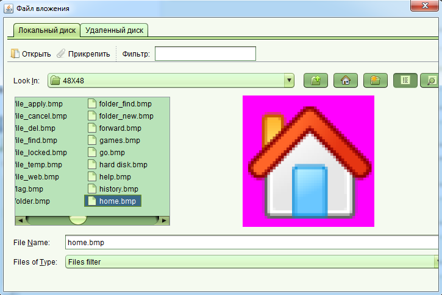

Форма документа
Цифровая копия документа может быть прикреплена на форме документа, которую можно открыть несколькими способами. Новый документ может быть создан на форме заявления или при регистрации прав на недвижимое имущество. Из этих же форм возможно редактирование документа. Воспользовавшись поиском документов, можно открыть найденный документ для редактирования, если у вас имеются соответствующие права.
Форма документа
Для прикрепления цифровой копии документа, откройте существующий документ для изменения или создайте новый через форму заявления или форму регистрации прав. В появившейся форме документа перейдите в поле "Вложение" и нажмите кнопку "...". В результате чего будет открыт обозреватель файлов, где вы можете выбрать необходимую копию документа на локальном или удаленном диске.

Удаленный диск отображает документы размещенные на сервере или сетевом диске, в зависимости от настройки SOLA.
При выборе файла будет автоматически отображена его миниатюра, позволяющая увидеть первую страницу без полной загрузке файла.
Миниатюры доступны для таких форматов как png, tiff, jpg, pdf.
После того как вы выбрали необходимый файл, нажмите кнопку "Прикрепить", в результате чего на форме документа будет отображено
имя файла в поле "Вложение", которое также можно удалить нажав на кнопку удаления вложения в том же поле.
При работе с большими файлами возможны некоторые проблемы, которые более детально описаны в разделе "Известные проблемы".
Смотрите также: